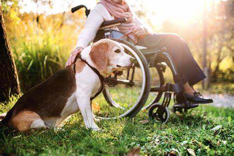

Alert Dogs
Links
websites below where you can find more infromation related to these topics.
How dogs can help
Dogs guide the blind and alert the deaf. They also help people with physical limits, but its not always about what you can see. Many people need them need them for phycologcal reason like ptsd. In many of those cases they save lifes and help poeple lesson their medication.
Dotations

The estimated cost to acquire, train, provide health care, feed and place a service dog is in the $20,000 $25,000 range in dog related cost only. Over a two year period, each dog is trained between 1500 and 1800 hours. Most non-profits takes accept dogs aswell. All donantionds are tax deductible.